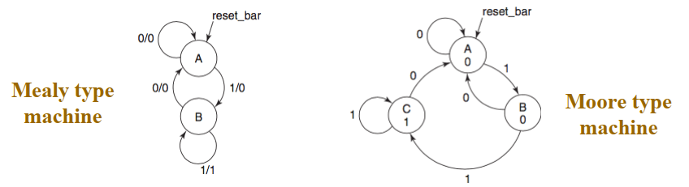
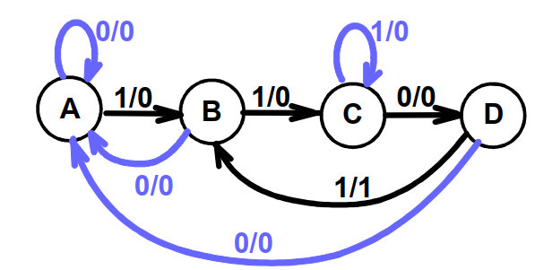
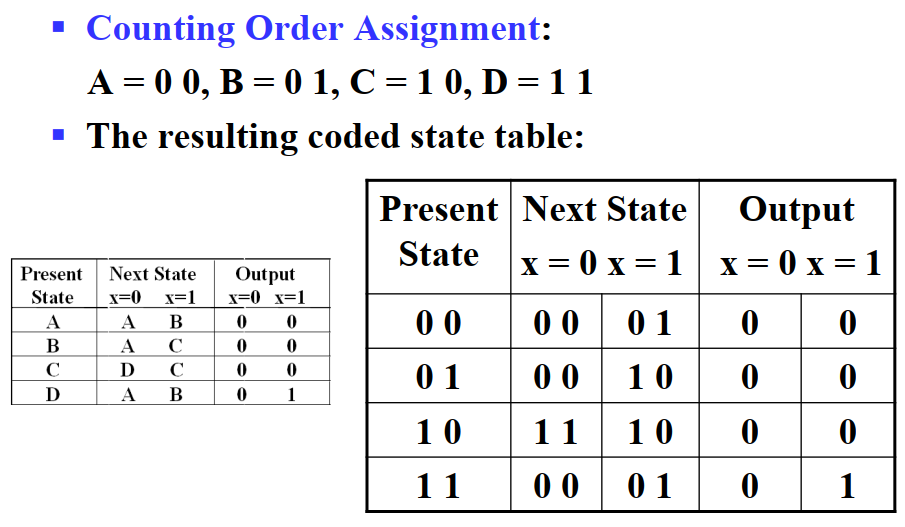
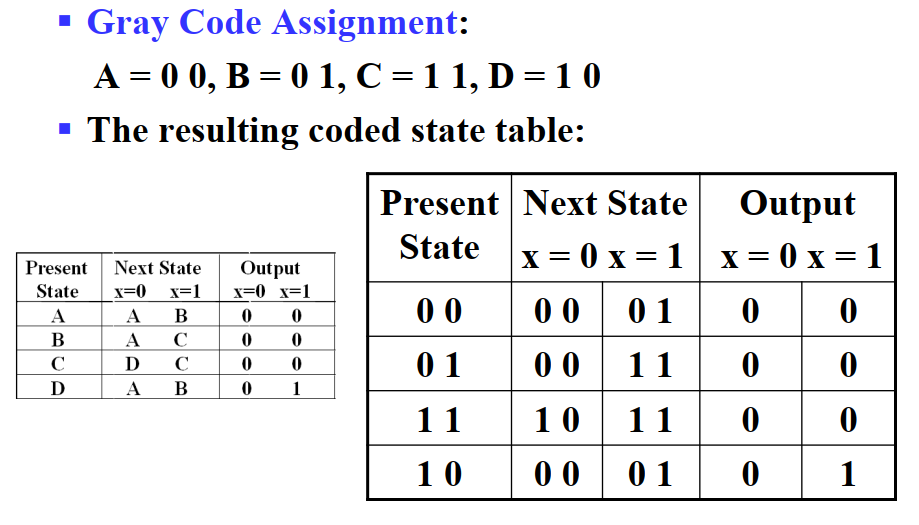
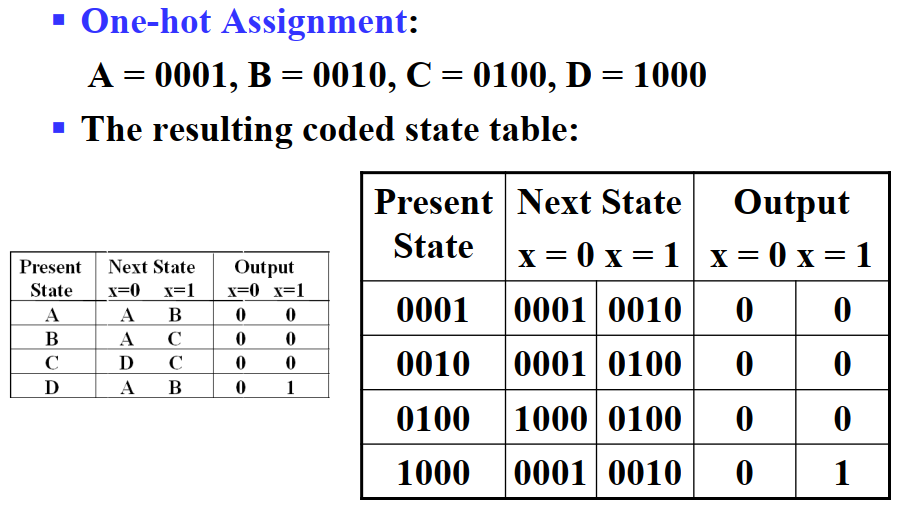

Chapter 4 Sequential Circuits¶
约 2272 个字 预计阅读时间 11 分钟
Part 1 Storage Elements and Sequential Circuit Analysis¶
Introduction of Sequential Circuits 时序电路的介绍¶
一个时序电路包含:
- Storage Elements:
- Latches or Flip-Flops 锁存器或触发器
- Combinational Logic

时序电路的种类:
- Synchronous 同步时序电路
- 根据时钟信号的变化来更新输出的值 更加可控
- Asynchronous 异步时序电路
- 每当输入的状态改变，立刻更新输出的值 变化更快
锁存器¶
Latch 的条件
- 拥有两个稳定的状态，0和1
- 能够长时间维持稳定态
- 在特定的情况下能够改变状态


二者的共同点是当S置1的时候，Q会变成1(注意S'R'锁存器 S置1的时候实际上输入了S'=0)
通过加上时钟信号作为使能，可以组成Synchronous的门控锁存器 Clocked S-R Latch

以上两种锁存器都存在一个问题，就是对于S/R某种输入存在不确定状态，并有可能产生介稳态(metastable state)
metastable state

为了消除这种不确定，一种解决方法是限定锁存器的输入状态，由此构成了D-Latch

| C | D | Q(t+1) |
|---|---|---|
| 0 | X | No change |
| 1 | 0 | 0: Clear Q |
| 1 | 1 | 1: Set Q |
只有当C为1时，D锁存器才能写入数据；而当C为0时，D锁存器的数据不会变化
Transparennt
在实际使用过程中，可能会遇到一个storage element连接到另一个storage element，然后另一个storage element又重新连接回原来的storage element，即在combinational logic中一个storage element的输入输出可能会相连。
但是如果\(\overline{Q}\)与D相连，在clock时钟信号有效的时间内，Q的值可能会多次变化，导致我们无法确定C置0时Q的输出是什么。这就是我们常说的空翻现象
触发器¶
为解决上述空翻问题，我们引入触发器
- Master-Slave flip-flops 主从触发器
- Edge-triggered flip-flops 边缘触发触发器
SR主从触发器

这样子当C置0时，Slave从Master中读取数据，而Master的数据是固定不变的，不会产生变化
但是其实主从触发器仍然存在问题，当S和R均置0时，如果出现0-1-0glitch(S或R输入短暂跳为1)，会导致Slave写入异常数据，这被称为1s-catching。
为了避免1s-catching，可以使用边缘触发触发器，它只保存了电位变化瞬间的那个数据，大大减小了危害。


Tip

Simpler Implement of Edge-Triggered D Flip-Flop

Flip-Flop Timing Parameters¶

- 为了保证数据能够成功存储在触发器中， 在边沿触发前需要有一小段Setup time (\(t_s\))
- 为了保证数据能够在触发后稳定保持并由时钟信号取样，在边沿触发后需要由一小段Hold time (\(t_h\))
- 二者合起来称为Flip-Flop的Setup hold window，这段时间需要保证数据是稳定的
主从触发器和边沿触发器对比
对比发现，主从触发器要求C为1时输入全程保持稳定，而边沿触发器只要在边沿前一小段时间保持稳定即可

Sequential Circuit Analysis¶
主要包括：
- Generating the functionality by using state table , state diagram , input/output Boolean equations .
- Determining the timing constraints that a sequential circuit must ba satisfied in order to prevent metastability .
分析功能¶
-
Step 1 列出
input equations,next state equationsandoutput equations
-
Step 2 根据等式列出
State Table


- Step 3 画出
State Diagram

如果存在两个状态，当他们对于相同的输入，输出均相同且转移到相同的状态，则这两个状态是 equivalent 的，需要我们手动优化。
历年卷里的奇怪题目
 注意，如果只给了时序电路的波形图，注意区别其与组合电路的区别: 时序电路的状态(包括内部与外部)在每次时钟正边沿的时候都会改变!因此上图一轮循环共有八个状态而不是四个
注意，如果只给了时序电路的波形图，注意区别其与组合电路的区别: 时序电路的状态(包括内部与外部)在每次时钟正边沿的时候都会改变!因此上图一轮循环共有八个状态而不是四个
 分析: 题目说
分析: 题目说 Their transitions always appear in the order shown in Figure 说明如果不按照图中顺序改变信号的话，E就会变成1. 由于我们不知道系统内部的具体状态，因此只能给每一种情况分配一个状态，而给Error单独一个状态. 并请注意，由于时序电路每个时钟正边沿都会执行一次，因此实际上每个状态都会有自环(至少这题是这样)

分析时间¶
The ultimate goal of timing analysis is to determine the maximum clock frequency of the circuit.
在分析中，常见的Timing Constraints Components 有：
- \(t_p\) - clock period - 时钟周期的间隔
- \(t_{pd,FF}\) - flipflop propagation delay - 从
clock edge到flip-flop output稳定下来所需要的时间 - \(t_{pd,COMB}\) - combinational logic delay - 从触发器输出到返回输入路径上所有组合逻辑的传播延迟
- \(t_s \& t_h\) - flipflop setup time & hold time
- \(t_{slack}\) - extra time in the period - 松弛时间，一般不加
各种时间示意图

- For every Flip-flop \(t_p\ge t_{slack} +(t_{pd,FF} +t_{pd,COMB}+ t_s)\)
- For whole circuit , \(t_p' \ge max\{t_p\}\)
- 一般分析实例中 \(t_h\) 小于 \(t_{pd,FF}\)
分析实例¶


历年卷里题目(简单的)

Part 2 Sequential Circuit Design¶
设计一般步骤：
- Specification - 确定输入/输出，并建立model描述系统的行为
- Formulation - 得到状态图(Mealy Diagram更好)，注意电路的初始状态，并由此得到状态表
- State Minimization - 根据表进行优化，可以消去重复的状态
- State Assignment - 给每个状态分配一个编码(
Counting Order,Grey Code,One-hot Code) - Equation - 利用卡诺图等方式得到并优化输入输出方程
可用的编码

设计实例 1 Sequence Recognizer¶
检测序列中的1101串

-
由此得到Mealy Model：

-
再根据图得到State Table
| Present State | Next State x=0 |
Next State x=1 |
Output x=0 |
Output x=1 |
|---|---|---|---|---|
| A | A | B | 0 | 0 |
| B | A | C | 0 | 0 |
| C | D | C | 0 | 0 |
| D | A | B | 0 | 1 |
- 编码
Info



- 通常使用D触发器来作为时序元件，其中D触发器的input通常为Next State的值，即\(D(t)=Y(t+1)\)


 可以看出
可以看出One-hot编码的优化非常简单，我比较喜欢喵
- 以格雷码为例，最终得到如图电路

设计实例 2 Modulo 3 accumulater for 2-bit operands¶
余三累加器
-
Specification
- Input: \((X_1, X_0)\)
- Stored SUM: \((Y_1, Y_0)\)
- Ouput: \((Z_1 ,Z_0) =(X_1, X_0) +(Y_1, Y_0)\) (Mealy Model) or \((Z_1 ,Z_0) =(Y_1, Y_0)\) (Moore Model)
-
Formulation


本例采用Moore Model进行演示
State Table under Moore Model

-
Find equation and optimize

-
最终电路

State Machine 状态机¶
正体不明
其它触发器(也有可能考的哦)¶
J-K Flip-flop¶
- 与SR-FlipFlop功能基本相同，但是 允许 J=K=1 ，并且J、K均为1时输出反转
| J | K | Q(t+1) | Operation |
|---|---|---|---|
| 0 | 0 | Q(t) | No change |
| 0 | 1 | 0 | Reset |
| 1 | 0 | 1 | Set |
| 1 | 1 | ~Q(t) | Complement |
也可以转换成 excitation table (时序电路设计时要用到)
| Q(t) | Q(t+1) | J | K |
|---|---|---|---|
| 0 | 0 | 0 | X |
| 0 | 1 | 1 | X |
| 1 | 0 | X | 1 |
| 1 | 1 | X | 0 |
构造图及其符号

T Flip-flop (Toggle)¶
- Has a single input
T- For
T = 0,no change to state - For
T = 1,changes to opposite state
- For
- 相当于JK触发器 J=K=T的情况
| T | Q(t) | Q(t+1) | Operation |
|---|---|---|---|
| 0 | 0 | 0 | No change |
| 0 | 1 | 1 | No change |
| 1 | 0 | 1 | Complement |
| 1 | 1 | 0 | Complement |
构造图及其符号

由表可以得到：
- \(Q(t+1)=T\oplus Q(t)\)
- \(T=Q(t)\oplus Q(t+1)\)
与正边沿D触发器比较